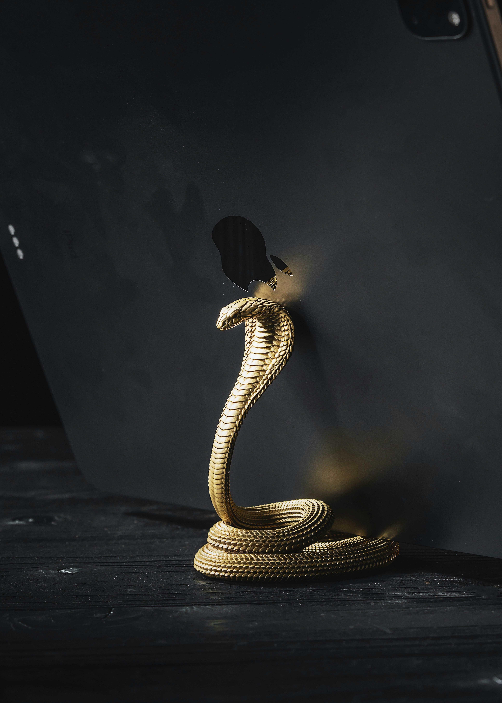
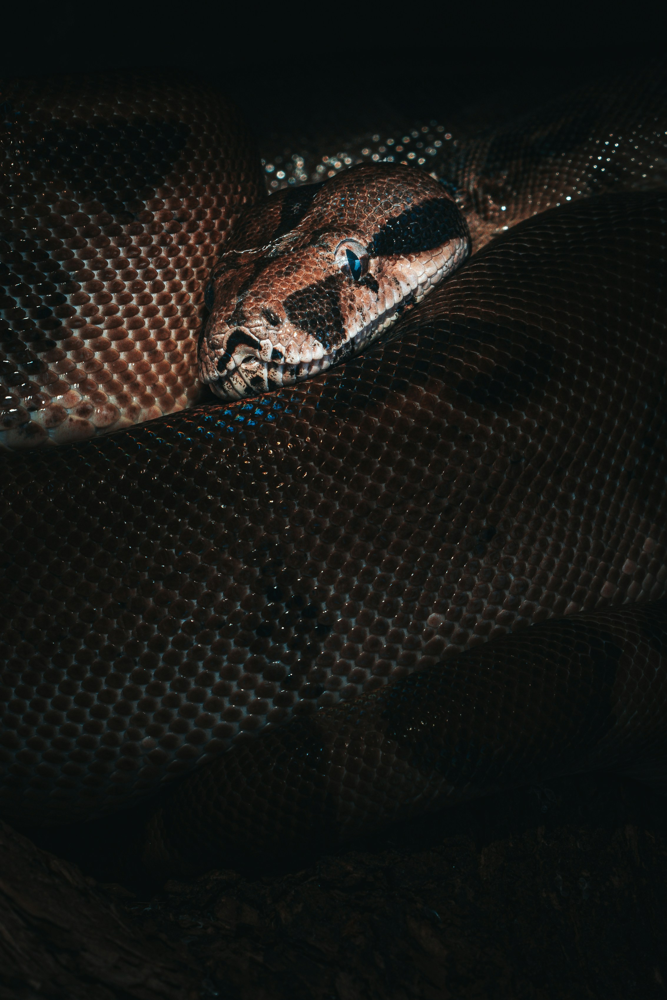
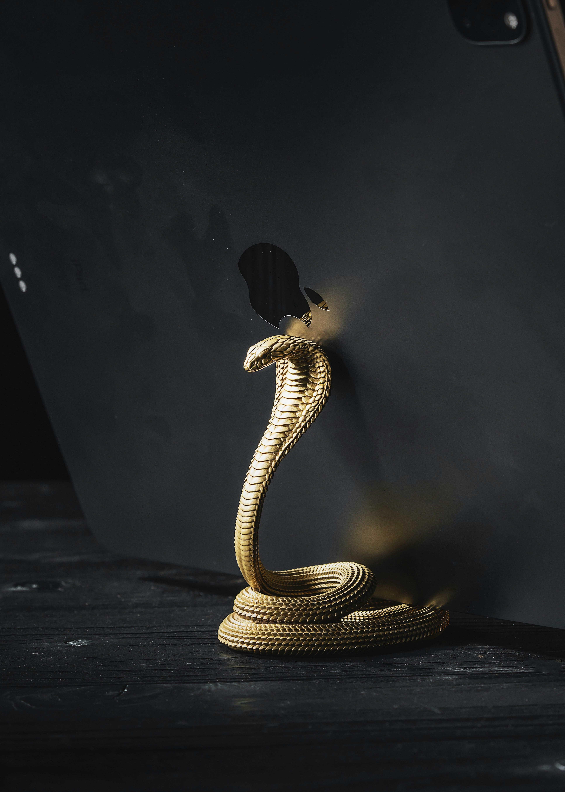
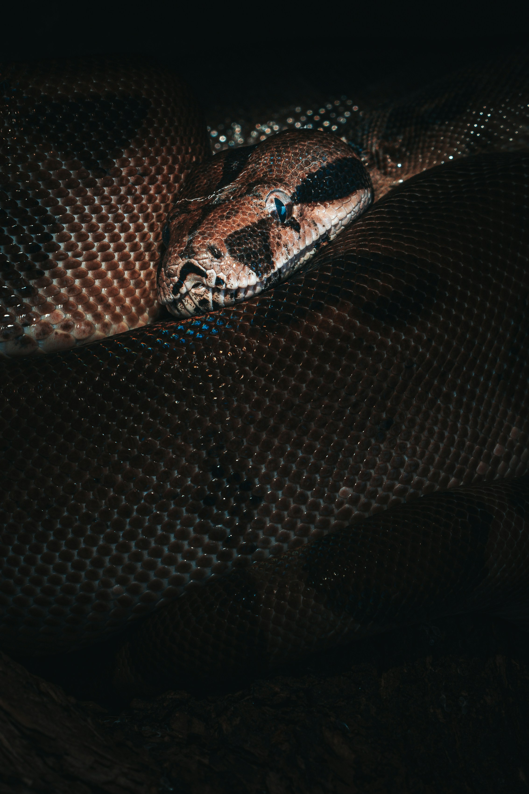

Black Manba
The black mamba (Dendroaspis polylepis) is a species of highly venomous snake belonging to the family Elapidae. It is native to parts of sub-Saharan Africa. First formally described by Albert Günther in 1864, it is the second-longest venomous snake after the king cobra; mature specimens generally exceed 2 m (6 ft 7 in) and commonly grow to 3 m (9.8 ft). Specimens of 4.3 to 4.5 m (14 to 15 ft) have been reported. It varies in colour from grey to dark brown. Juvenile black mambas tend to be more pale in colour than adults, and darken with age. Despite the common name, the black mamba is not black; the colour name describes rather the inside of its mouth, which it displays when feeling threatened. The species is both terrestrial (ground-living) and arboreal (tree-living); it inhabits savannah, woodland, rocky slopes and in some regions, dense forest. It is diurnal and is known to prey on birds and small mammals. Over suitable surfaces, it can move at speeds up to 16 km/h (10 mph) for short distances. Adult black mambas have few natural predators. In a threat display, the black mamba usually opens its inky-black mouth, spreads its narrow neck-flap and sometimes hisses. It is capable of striking at considerable range and may deliver a series of bites in rapid succession. Its venom is primarily composed of neurotoxins that often induce symptoms within ten minutes, and is frequently fatal unless antivenom is administered. Despite its reputation as a formidable and highly aggressive species, the black mamba attacks humans only if it is threatened or cornered. It is rated as least concern on the International Union for Conservation of Nature (IUCN)'s Red List of Threatened Species


 


